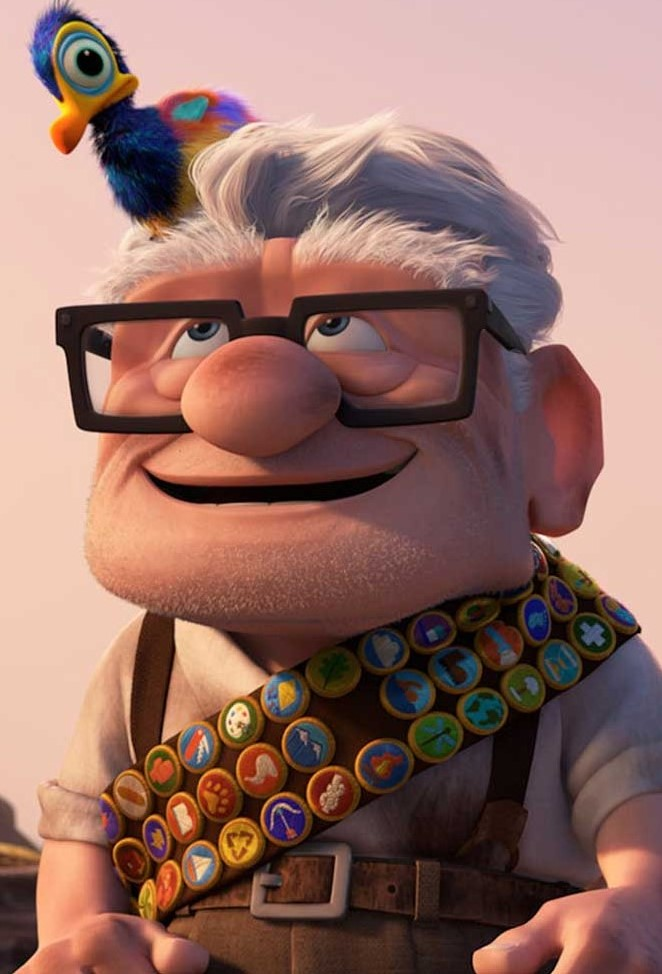
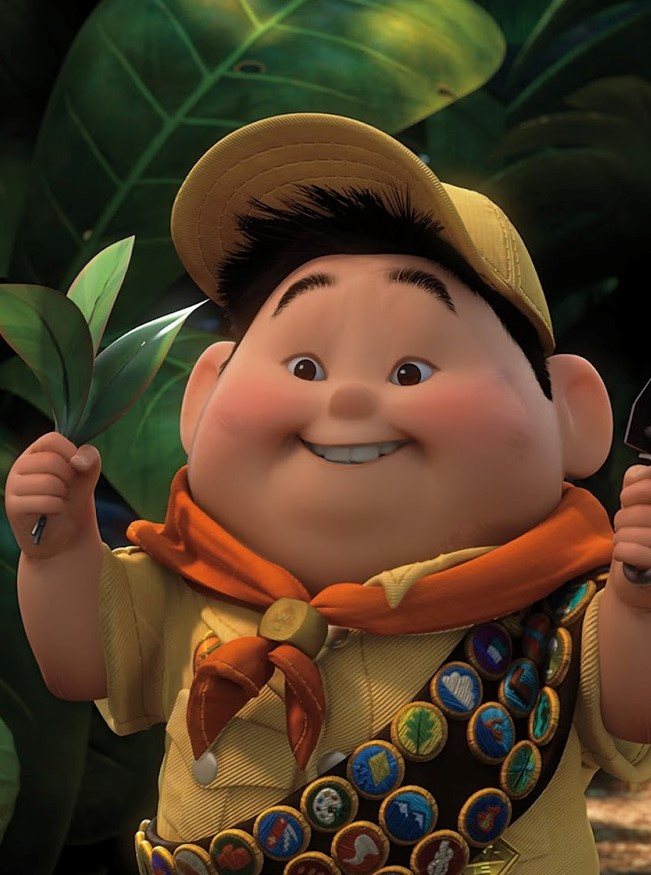
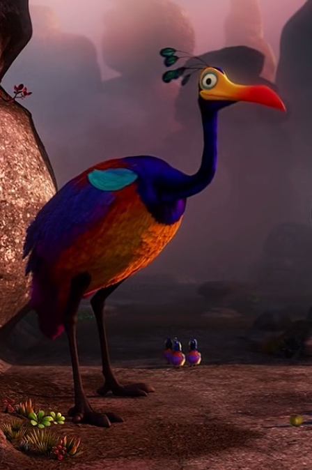
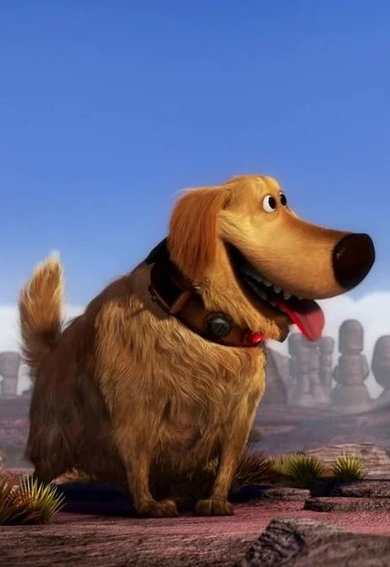
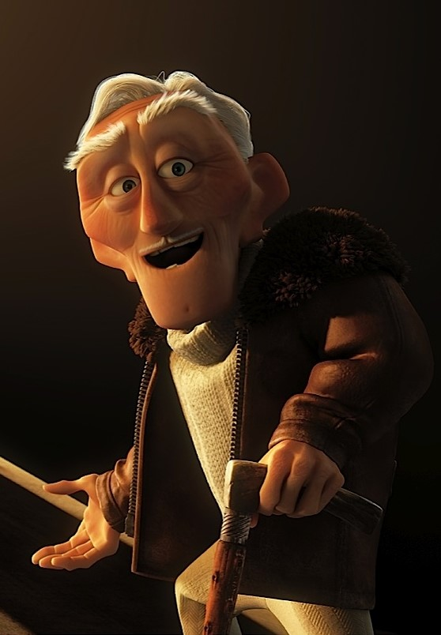
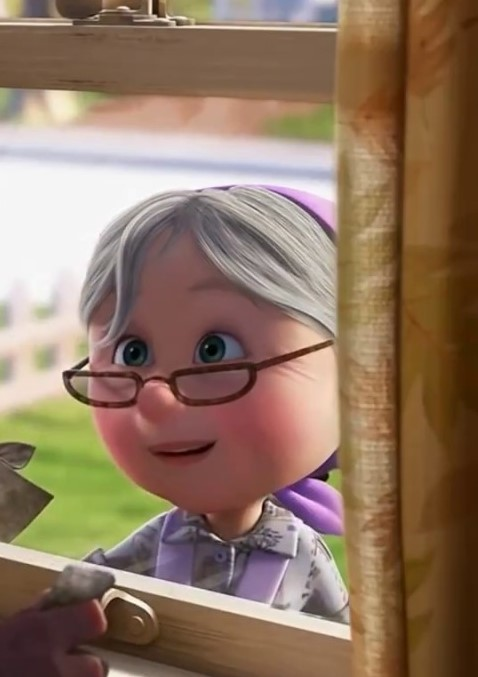
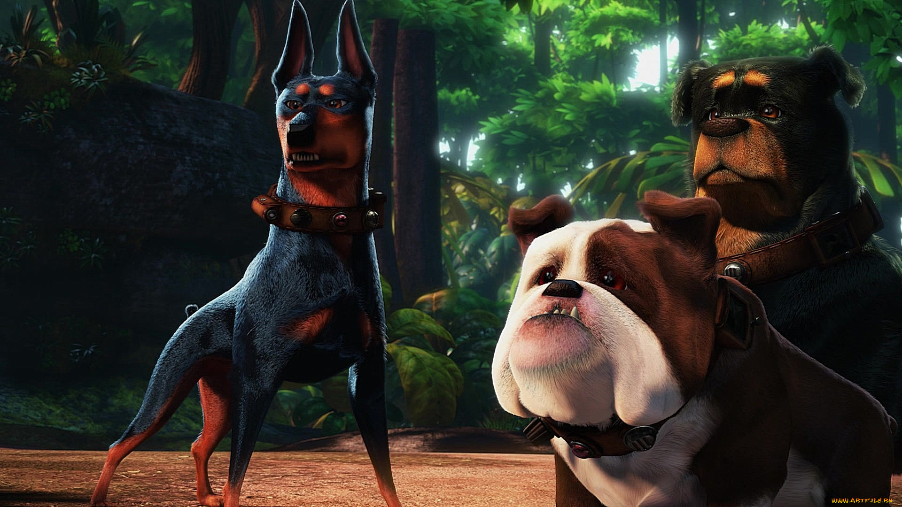

Карлу Фредриксену 78 лет, и больше всего на свете он любит ворчать. Правда, есть у него последняя миссия — в память о своей жене отправиться в Южную Америку путешествовать. Чтобы это всё провернуть, он привязал несколько тысяч воздушных шариков к своему дому и был таков. Правда, уже во время полёта он обнаружил, что случайно прихватил с собой очень болтливого мальчика Рассела. Тут-то и начались настоящие приключения. Как и «История игрушек», этот мультфильм компании Pixar был удостоен двух «Оскаров».
Персонажи

Карл Фредриксен Главный персонаж мультфильма. 78-летний ворчун, бывший продавец воздушных шариков, вдовец. Со смерти жены Элли жил в одиночестве. После того, как Карл из-за сломанного почтового ящика ударяет одного из рабочих, его приговаривают к уголовной ответственности. Руководителям стройки удаётся отсудить у него дом, а самого Крала отправят в дом престарелых «Дубки». Тогда он решается на крайние меры: используя 10000 гелиевых шаров, ему удаётся поднять в небо свой дом и улететь из города на осуществление своей давней мечты. В конце мультфильма стал дедушкой Рассела.

Рассел Девятилетний мальчик-скаут. Совершенно случайно отправился вместе с Карлом Фредриксеном в путешествие на его доме. Очень болтлив, но любит животных. Его отец живёт вместе с другой женщиной — некой Филлис, — отчего Рассел очень страдает, вспоминая добрые времена, когда он гулял и играл вместе с папой. В конце мультфильма стал внуком Карла Фредриксена.

Кевин Кевин является главным объектом охоты Чарльза Манца, которую тот ищет с помощью своих собак. Имя «Кевин» было дано ей Расселом, так как изначально он не знал её настоящего пола. Имеет троих детей. Внешне Кевин очень красива - она имеет радужную расцветку оперения. У неё так же есть хохолок чем-то похожий на павлиний и большой жёлто-красный клюв. Внешне она больше всего похожа на дронда или птицу моа. Живёт в Южной Америке вместе со своими птенцами. Очень любит шоколад. Кевин, как и любой другой родитель, волнуется и защищает своих детей. Для большинства существ она вполне дружелюбна, игрива и ласкова, как например с Расселом. Но если Кевин чувствует угрозу то начинает издавать на противника шипение, пытаясь загнать его в угол.

Даг Пёс породы золотой ретривер, который умеет говорить благодаря ошейнику, сделанному Чарльзом Манцем, его хозяином. Охотился за Кевином, но в итоге подружился с ним. Обрёл настоящих хозяев в лице Карла Фредриксена и Рассела.

Чарльз Манц Первоначально он показан как храбрый и смелый человек, который любит путешествовать и преодолевать опасности. Он многое повидал. Но после того, как он нашёл скелет гигантской птицы его жизнь сломалась. Учёные подвергли его находку сомнениям, и он отправился в Южную Америку, поклявшись бросить к их ногам живую птицу. Эта погоня свела его с ума - всех случайно попавших к нему гостей Манц подозревает в том, что они явились украсть его птицу, которая еще даже не поймана. Что он с ними делал - неизвестно, но возможно убивал. Когда Карл и Рассел попадают на Райский Водопад, то они встречают Манца. Он угощает друзей и рассказывает о своей жизни. После обеда он показывает героям найденный скелет, и Рассел случайно проговаривается о Кевине. Чарльз ловит Кевина и поджигает часть дома Карла, зная что он дорожит им. После битвы с Карлом на его дирижабле Манц хочет убить их всех дробовиком после чего падает между домом Карла и своим дирижаблем с большой высоты и разбивается насмерть.

Элли Подруга детства и жена Карла. Очень хотела иметь ребёнка, но оказалось, что она бесплодна. Всю жизнь хотела отправиться в путешествие к Райскому водопаду вместе с мужем, но умерла, так и не осуществив свою мечту, которую, однако, осуществил её супруг.

Альфа, Бетта, Гамма Альфа - доберман, пес Чарльза Манца, главный из стаи. Охотится за Кевином. У него часто ломается говорящий ошейник, вследствие чего он начинает говорить тоненьким смешным голосом. Бетта - ротвейлер, ещё один пес Чарльза Манца, который охотится за Кевином. Гамма - бульдог, третий пес Чарльза Манца, охотитящийся за Кевином.